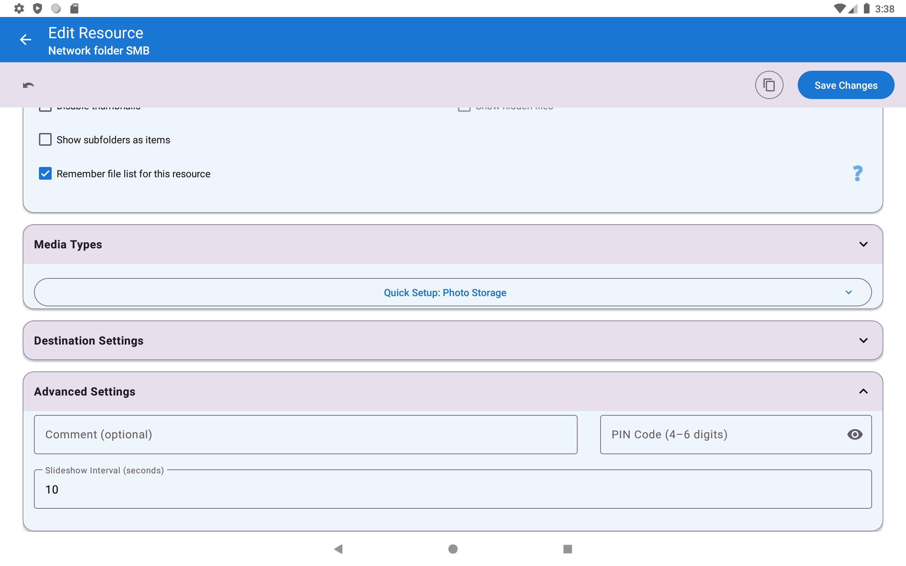

Creating Photo Slideshows
A slideshow moves from one photo to the next by itself. Choose how long each photo stays, add background music, and let the app keep the screen on - a phone or tablet becomes a photo frame in a minute.
Why You'll Love This
Relatives are visiting and you want to show the holiday photos on the TV without swiping every few seconds. Or an old tablet on the shelf could become a photo frame that shows a new family picture every minute. A slideshow does exactly that: it moves to the next photo by itself, after the number of seconds you choose, and can play music in the background.
A slideshow is only a way of looking. It never creates a video and never changes your files.
- ✓ FastMediaSorter in any edition. In the Photos edition the slideshow shows pictures only, because that edition does not play video or audio.
- ✓ A resource with photos, for example a folder on this device or a network folder on your home computer.
- ✓ Optional: a second resource with music, if you want background music.
Start the slideshow
Open the first photo of the folder in the image viewer and tap Slideshow on the control bar. The button turns red while the slideshow runs. Tap it again to stop.
There is also a shortcut on the main screen: some resources show a small Start slideshow icon on their card, which opens the folder and starts the slideshow in one tap.
The slideshow walks through the folder in the same order as the file browser. The next photo replaces the previous one at once, without fades or other effects.
Player showing a photo, control bar visible, Slideshow button active (red).
While the slideshow runs, the screen does not go dark - you will see the message "Screen will stay on during slideshow". When you stop it, your usual screen timeout comes back.
Choose how long each photo stays
Each photo stays on screen for 10 seconds unless you choose otherwise. You can set a different time for every resource: on the main screen open the resource for editing, expand Advanced Settings and type the number of seconds into Slideshow Interval (seconds). Anything from 1 second to 3600 seconds (one hour) works. Tap Save Changes.
The default for new resources is in Settings, the Player tab, section Sorting, slideshow and playback order, field Slideshow (s).

Watch the countdown
A few seconds before the next photo appears, a small countdown - 3, 2, 1 - shows in the corner. It tells you the photo is about to change, so you can stop the slideshow in time if you want to look longer. The countdown appears whenever a photo stays longer than three seconds.
Slideshow running, countdown overlay showing 2.
Change the slideshow on the fly
Press and hold the Slideshow button. The Slideshow Settings window opens:
- Default slideshow (sec.) - a slider from 1 to 60 seconds for the current session.
- Play videos/audio to end - when this is on, a video or a song in the folder plays to its end before the slideshow moves on, and no countdown is shown for it.
- Background Music - tap to pick one music file from your phone to play during this slideshow; the name of the chosen track is shown below, and a clear button removes it.
Slideshow Settings dialog over a photo, interval at 5 s, play-to-end on.
Play music from a whole music folder
For a slideshow with music every time, go to Settings, the Media tab, section Images, GIFs and slideshow, turn on Play music during slideshow, tap Select Music Source and choose the resource that holds your music. From now on every slideshow of photos and GIFs plays the tracks of that resource in random order.
You can mix places freely: photos from a network folder and music from this device, or the other way round.
Settings, Media tab, Images section, background music on, source chosen.
Show photos while music plays
It also works the other way round: listen to music and let photos change in the background. Go to Settings, the Media tab, section Audio playback, covers and visuals, turn on Show random photos during audio playback and pick the resource with your photos.
Now open a song in the audio player and tap Slideshow. The music controls step aside and a full-screen photo appears, replaced by another random photo at every slideshow interval. More about backgrounds for music is in Playing and organizing music files.
What You Get
Your photos change by themselves at the pace you chose, with a short countdown before each change, music in the background if you want it, and videos and songs that play to the end. The screen stays on for as long as the show runs.
Tips and Troubleshooting
- The slideshow stopped with "Connection to .. was lost"? The network folder became unreachable, for example the computer went to sleep or Wi-Fi dropped. Start the slideshow again when the connection is back.
- The slideshow stopped with "No access to .."? Three files in a row could not be opened. Check that the folder is still there and that the app may still read it.
- Videos interrupt your photo show? Turn off Play videos/audio to end, or limit the resource to pictures in its settings.
- Photos are cut at the edges? Turn off Crop images to fill screen in Settings, Media, Images, GIFs and slideshow - see Viewing photos, GIFs and zoom gestures.
- The slideshow does not start for a music or video library? Resources set up with the Audio Library or Video Library resource profile play their files one after another on their own and do not use the slideshow timer.